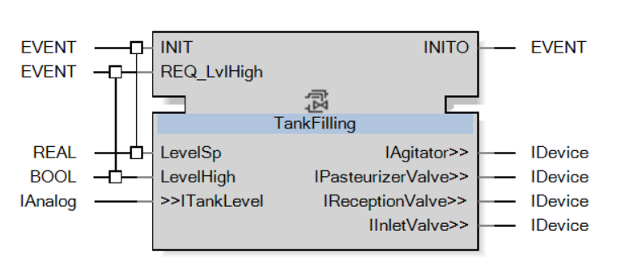
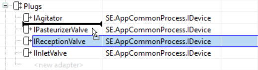
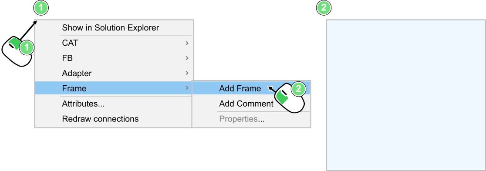
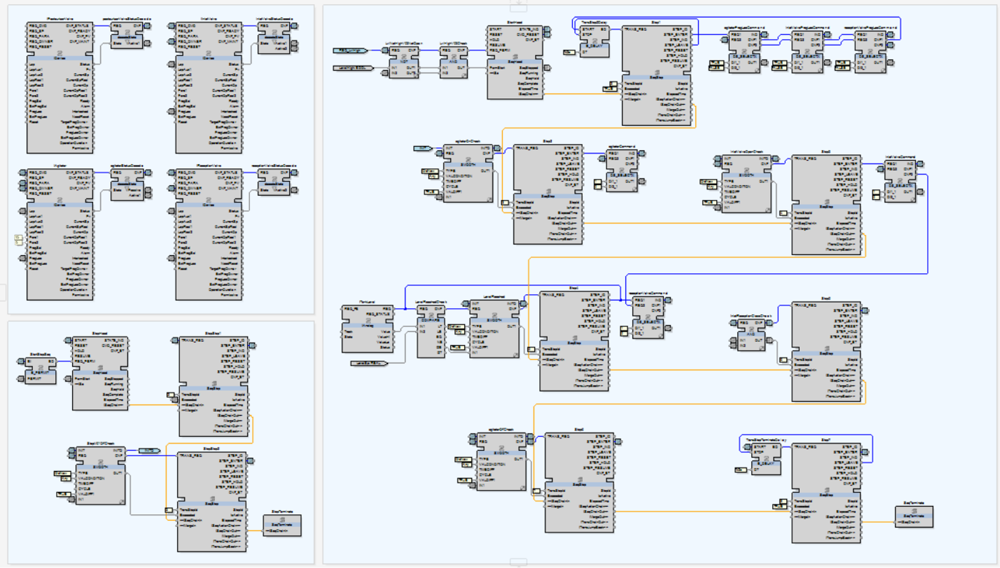
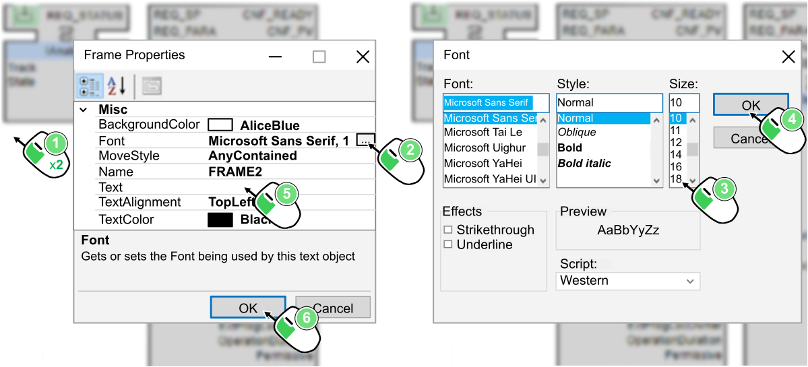
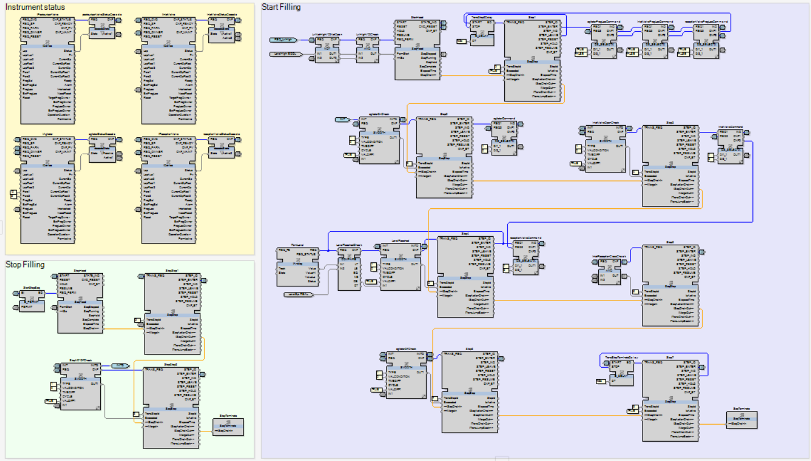

Finalizing CAT development
Now that the two needed sequences have been developed, it is then possible to finalize the CAT development and to organize its network.
To finish the development of the CAT, one last link has to be added.
This link is between StopM01OffCheck.INITO and the output event INITO. As this SMOOTH function block is the last one of the initialization chain, then it has to be linked to the output event. It will then show that all the function blocks of the CAT have been correctly initialized, as each of them is initializing the next one after being themselves correctly initialized.

|
NOTE:
With the INITO output connected to the chain of initialization, it can then show to other function blocks that the TankFilling CAT has been fully initialized. |
At the end, with all the ports added, modified and removed, the TankFilling Interface editor should look like the following image:
|
 |

|
If the events or variables are not in the same order, they can be re-organized by dragging-and-dropping their names in the upper or lower line as follows. |
|
 |
Now, for the organization of the function block, frames are going to be added to the network.
|
|
A frame is a rectangle area that can be added on the back of a network. |

|
|
The purpose of the frame is to:
|
Add three frames, one by group: Instrument status, Start Filling and Stop Filling. Then add all the related function blocks inside these frames.

In addition, each frame can be customized for even more clarity by:
-
Adding a title: Instrument status, Start Filling and Stop Filling

-
Changing the background color: LemonChiffon, Lavender and Honeydew

|
|
NOTE:
The organization seen in this topic (the function blocks positions, the frame positions, the colors and so on) is purely subjective and is just a proposition of organization, not an universal rule. |